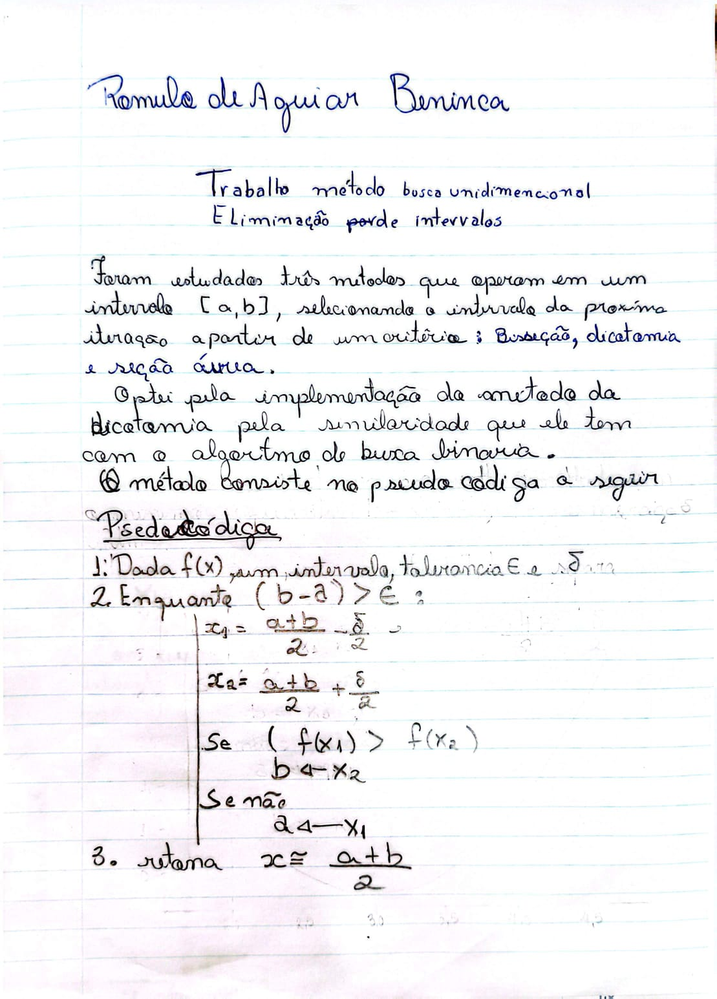
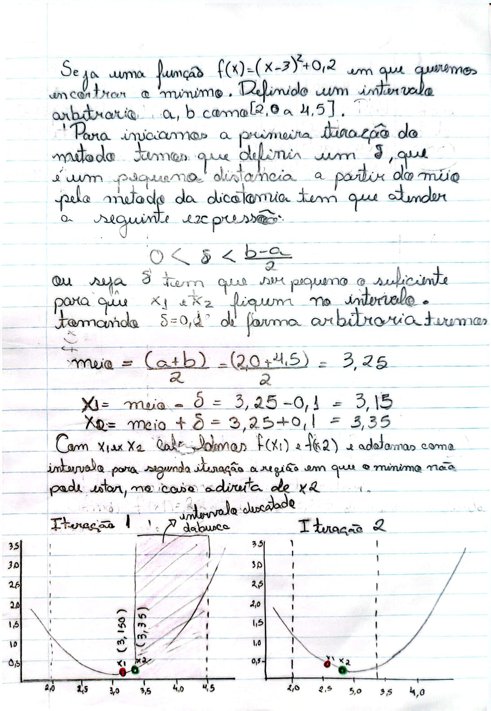
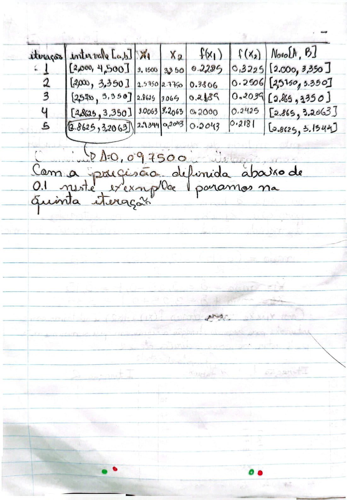

Otimização Não Linear — Trabalho 3
Busca Unidimensional para Minimização de Funções
Romulo de Aguiar Beninca · Prof. Dr. Carlos Alberto Bavastri
O método da dicotomia é uma técnica de busca unidimensional usada para localizar o mínimo de uma função \( f(x) \) unimodal em um intervalo fechado \( [a, b] \). A ideia é reduzir progressivamente o intervalo de incerteza — onde sabemos que o mínimo está — até que sua largura fique menor que uma precisão \( \varepsilon \) definida previamente.
A cada iteração avaliamos a função em dois pontos muito próximos, simétricos em torno do centro do intervalo, e usamos a comparação entre eles para descartar a metade que não pode conter o mínimo.
As páginas a seguir contêm o desenvolvimento manuscrito do método: a formulação, a estratégia de redução do intervalo e a interpretação geométrica dos pontos de teste.



Arquivo dicotomia.m — implementação da busca do mínimo pelo método da dicotomia:
funcao = @(x) (x - 3).^2 + 0.2;
% Intervalo inicial
a = 2.0;
b = 4.5;
epsilon = 0.1; % precisão
delta = epsilon / 10;
k = 0;
resultado = busca_min_dicotomia(funcao, a, b, epsilon);
resultado
function min = busca_min_dicotomia(funcao, a, b, epsilon)
k = 0;
while abs(b - a) > epsilon
k = k + 1;
centro = (a + b) / 2;
x1 = centro - epsilon/10;
x2 = centro + epsilon/10;
f1 = funcao(x1);
f2 = funcao(x2);
if f1 > f2
a = x1;
else
b = x2;
end
fprintf('Final: %d iterações, intervalo [%f, %f]\n', k, a, b);
end
min = (a + b) / 2;
end